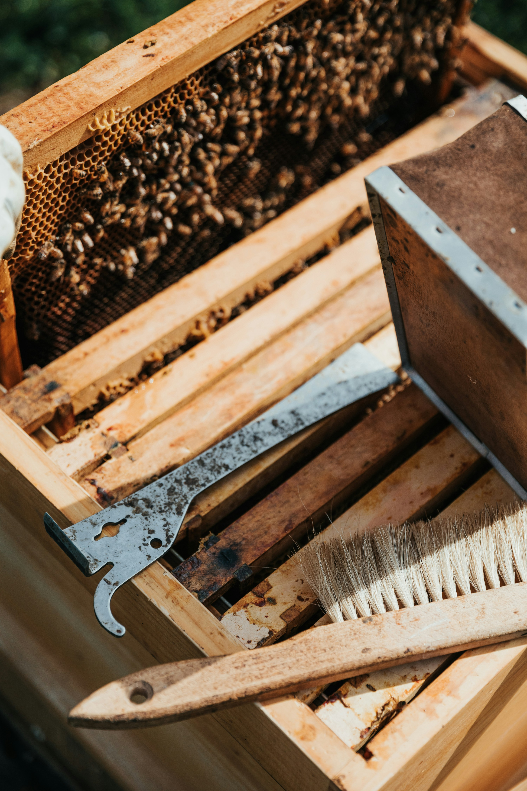

A YEAR IN THE APIARY – AUGUST
August is a month of both abundance and challenges. The warm and sunny weather means that the bees are active and productive. Your main focus is checking for disease and making preparations for Winter. August is a time for monitoring and managing Varroa mites. Regularly check hives for signs of Varroa infestation, and treat the hive if necessary. There are a variety of treatments available, including chemical and non-chemical options, and you need to choose the most appropriate treatment for your hive. Depending on your area, bees may still be foraging for heather and balsam; therefore, you may have to delay your disease and Winter arrangements. If foraging is reduced, the bees will have less to do and their life spans are extended significantly.
August is also a time for honey harvesting. Depending on the weather and the location of the hive, you may be able to harvest honey from hives in August. Harvesting honey requires careful preparation, including ensuring that the honey is properly capped.
Maintain weekly hive inspections: This is the time of year when you should be looking at your hives and be aware of any problems such as queen-less colonies, drone-laying queens etc. Unite weaker colonies as long as they are disease-free. You still have time to fix problems before they hunker down for winter.
Making splits: You can still make splits this time of year but you will have to use a mated queen.
Monitor honey stores: As the nectar flow begins to slow down, it is important to monitor your hives' honey stores. Make sure they have enough honey to sustain themselves throughout the upcoming months (approximately 20Kg).
Feed bees: If your colonies are light on honey stores, feed them sugar syrup or better still, partial enzyme inverted feed to ensure they have enough food to last them through the winter.
Harvest honey: If your colonies have produced excess honey, August is a good time to harvest it. Make sure to leave enough honey for the bees to feed on throughout the winter months. Store your supers and foundation and take preventative measures against wax moths. Once you have extracted the honey, put the wet supers back on the hive for a few days, the bees will clean them out. You can remove these in a few days when dry. Place any frames with uncapped honey into a single super and position it beneath the brood box. This provides the bees with additional food and raises them further from the cold ground; keep it this way until spring.
Check for diseases: Inspect your hives for signs of disease, such as foulbrood, Nosema, chalkbrood, sacbrood, baldbrood etc. If you notice any symptoms, take appropriate measures to treat the disease.
Treat for Varroa: August is a good time to treat your colonies for Varroa mites. Use an appropriate treatment method, such as vaporizing oxalic acid or using Apiguard.
Remove swarm traps: Store the swarm traps for next season.
Wasps: Wasps are particularly active this time of year so it's time to reduce the hive entrances and put out traps.
Maintain records: Beekeeping records are an important tool to manage colonies effectively and ensure the health and productivity of your bees. Don't forget to record your findings.
Attend educational events: Attend beekeeping events, such as seminars or conferences, to learn about new techniques and best practices.